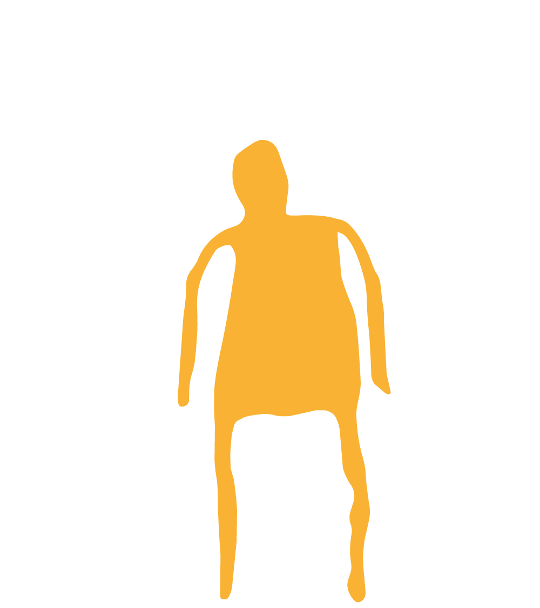
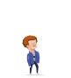
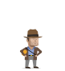
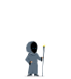

S
C
U
M
M
Script Creation Utility for Maniac Mansion
░░░░░░░░░░░░░░░░░░░░░░░░░░░░░░░░░░░░░░░░░░░░░░░░░░░░░░░░░░░░░░░░░░░░░░░░░░░░
░░░░░░░░░░░░░░░░░░░░░░░░░░░░░░░░░░░░░░░░░░░░░░░░░░░░░░░░░░░░░░░░░░░░░░░░░░░░░░░░░
░░░░░░░░░░░░░░░░░░░░░░░░░░░░░░░░░░░░░░░
░░░░░░░░░░░░░░░░░░░░░░░░░░░░░░░░░░░░░░░░░░░░░░░░░░░░░░░░░░░░░░░░░░░░░░░░░░░░
░░░░░░░░░░░░░░░░░░░░░░░░░░░░░░░░░░░░░░░░░░░░░░░░░░░░░░░░░░░░░░░░░░░░░░░░░░░░░░░░░
░░░░░░░░░░░░░░░░░░░░░░░░░░░░░░░░░░░░░░░
SCUMM fue un motor de videojuegos desarrollado por Ron Gilbert y Aric Wilmunder en 1987 para facilitar el desarrollo del juego Maniac Mansion durante su etapa como empleados de Luscasfilm Games (posteriormente Lucas Arts).
Este nuevo motor permitía a los diseñadores de video juegos crear escenarios, objetos y secuencias de diálogos en un lenguaje de programación diferente al utilizado en el código fuente del juego. Además, permitía que los archivos de datos del juego fueran multiplataforma, es decir, que estos pudiesen ser fácilmente reutilizados en otras plataformas, por ejemplo: Amiga , Atari ST, Commodore 64, Apple Macintosh, Nintendo Entertainment System, DOS, Microsoft Windows, Sega CD (Mega-CD) y un largo etcétera.

▒▒▒▒▒▒▒▒▒▒▒▒▒▒▒▒▒▒▒▒▒▒▒▒▒▒▒▒▒▒▒▒▒▒▒▒▒▒▒▒▒▒▒▒▒▒▒▒▒▒▒▒▒▒▒▒▒▒▒▒▒▒▒▒▒▒▒▒▒▒▒▒▒▒▒▒▒▒▒▒▒▒▒▒▒▒▒▒▒
▒▒▒▒▒▒▒▒▒▒▒▒▒▒▒▒▒▒▒▒▒▒▒▒▒▒▒▒▒▒▒▒▒▒▒▒▒▒▒▒▒▒▒▒▒▒▒▒▒▒▒▒▒▒▒▒▒▒▒▒▒▒▒▒▒▒▒▒▒▒▒▒▒▒▒▒▒▒▒▒▒▒▒▒▒▒▒▒
▒▒▒▒▒▒▒▒▒▒▒▒▒▒▒▒▒▒▒▒▒▒▒▒▒▒▒▒▒▒▒▒▒▒▒▒▒▒▒▒▒▒▒▒▒▒▒▒▒▒▒▒▒▒▒▒▒▒▒▒▒▒▒▒▒▒
Lucas Arts
Ron Gilbert creció en una pequeña ciudad en Oregón como el hijo de un profesor de física de un colegio.
Mientras en la escuela secundaria, aprendió por su cuenta programar en lenguaje ensamblador
y dedicó mucho de su tiempo a desarrollar sus talentos como programador informático.
Empezó su carrera en la industria de los videojuegos a principio de los años ochenta con un programa llamado Graphics Basic,
que vendió a una compañía llamada Human Engineered Software. Cuando recibió su diploma de ciencias informáticas,
Gilbert comenzó a trabajar en dicha compañía.
Estuvo más o menos medio año en HESware, programando juegos arcade para Commodore 64.
Ninguno de ellos salió jamás a la venta; la compañía quebró. En su búsqueda por un nuevo empleo,
Gilbert terminó en LucasFilm Games, que más tarde se convertiría en LucasArts.
Allí se ganaba la vida portando juegos de Atari 800 a C64.
En 1985 tuvo la oportunidad de desarrollar su propio juego para LucasArts.
Trataba sobre una tenebrosa mansión victoriana habitada por un científico loco,
su ligeramente retrasada descendencia y extraños alienígenas.
Ron Gilbert y el artista de LucasFilm Gary Winnick idearon este juego tras varias reuniones,
y se lo comunicaron a la dirección. Nacía así Maniac Mansion.
Ron Gilbert programó un lenguaje script llamado, en honor al proyecto para el que se escribió,
Script Creation Utility for Maniac Mansion, más conocido como SCUMM.
Maniac Mansion fue publicado en 1987 con un éxito increíble. SCUMM demostró ser el perfecto armazón técnico
para desarrollar juegos de aventura. Gilbert desarrolló muchas aventuras gráficas exitosas con su motor en LucasArts,
como el clásico The Secret of Monkey Island, hasta que la dejó para crear su propia compañía en 1992:
Humongous Entertainment con Shelley Day de LucasArts.
::::::::::::::::::::::::::::::::::::::::::::::::::::::::::::::::::::::::::::::::::::::::::::::::::::::::::::::::::::::::::::::::::::::
::::::::::::::::::::::::::::::::::::::::::::::::::::::::::::::::::::::::::::::::::::::::::::::::::::::::::::::::::::::::::::::::::::::
::::::::::::::::::::::::::::::::::::::::::::::::::::::::::::::::::::::::::::::::::::::::::::::::::::::::::::::::::::::::::::::::::::::
::::::::::::::::::::::::::::::::::::::::::::::::::::::::::::::::::::::::::::::::::::::::::::::::::::::::::::::::::::::::::::::::::::::
::::::::::::::::::::::::::::::::::::::::::::::::::::::::::::::::::::::::::::::::::::::::::::::::::::::::::::::::::::::::::::::::::::::
::::::::::::::::::::::::::::::::::::::::::::::::::::::::::::::::::::::::::::::::::::::::::::::::::::::::::::::::::::::::::::::::::::::
::::::::::::::::::::::::::::::::::::::::::::::::::::::::::::::::::::::::::::::::::::::::::::::::::::::::::::::::::::::::::::::::::::::
Juegos
Maniac Mansion (1987)

Destacaba por tener múltiples finales alternativos,
dependiendo de los personajes escogidos (y de los que logren sobrevivir),
y de lo que hagan los personajes a lo largo del juego.
Zak McKracken (1988)

Zak McKracken (1988)

Zak McKracken (1988)
Zak McKracken (1988)
Zak McKracken (1988)
Zak McKracken (1988)
Zak McKracken (1988)
Zak McKracken (1988)
Zak McKracken (1988)
Zak McKracken (1988)
Zak McKracken (1988)